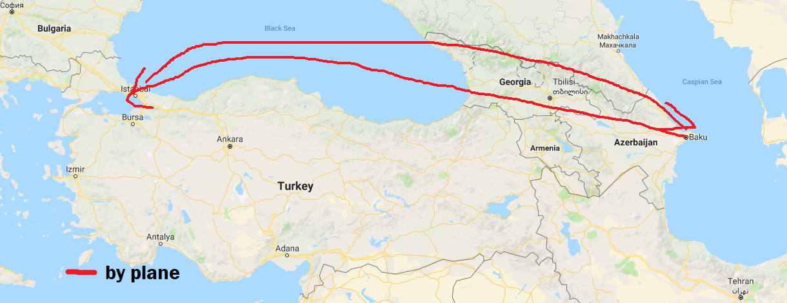
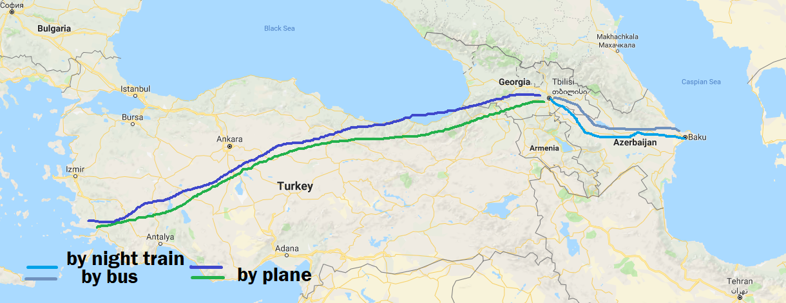
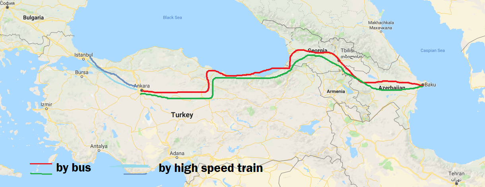

Travels :)
Trips to Turkey till 2016
I have travelled to Turkey a lot due to varios aims. My first trip was in 2011 for ALES exam. I have used Azerbaijan Airlines and flied with my friends.
My second trip was with bus in the end of 2013. I travelled to Istanbul with my nephew Metin. As we tour orginezers it was fun, because we took there 15 people as a tour leader and had a great time there.

The trip to Bodrum in 2015 was more existing and unforgotable. It was our summer holidays in 5 star hotel with my friends. Firstly, we used night train to Tbilis from Baku. We stayed one in Tbilisi, then flied to Bodrum. The return was the same, but insted of using train we used bus to return to Baku from Tbilisi.
 The last time when I went to Turkey with bus was in May 2016. I went to Ankara and stayed in my nephews apartment. I had ALES there which I passed but did go study in Turkey. Then I went to Istanbul to see my sister and niece by high speed train. 